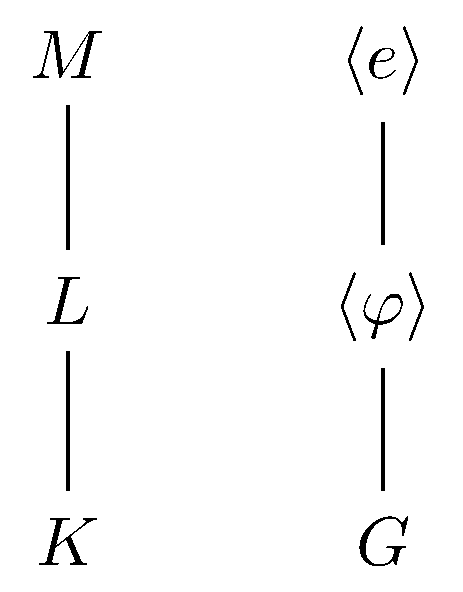

April 12th
Today I learned the proof of the general case of Chebotarev's theorem, from here . Fix a Galois extension $M/K$ with $G:=\op{Gal}(M/K)$ and conjugacy class $C\subseteq G.$ We want to compute the density of (unramified) primes $\mf p\in\op{Spec}\mathcal O_K$ with Frobenius $C.$ So we let $S^1_K$ be this set of primes, with the added condition $\mf p$ has absolute degree $1$ (over $\QQ$); this restriction does not alter the density.
In order to reduce to the abelian case, we let $H:=\langle\varphi\rangle\subseteq G$ and $L:=M^H$ its fixed field. This gives the following field tower diagram.

Now, the idea is to count the desired primes in $K$ by lifting them to $L,$ where we know the (Dirichlet) density of\[S_L:=\left\{\mf q\in\op{Spec}\mathcal O_L:\left(\frac{M/L}{\mf q}\right)=\varphi\right\}\]is $1/\#H$ because $\op{Gal}(M/L)=\langle\varphi\rangle$ makes an abelian extension, which we understand. We let $S^1_L$ be the unramified primes of $S_L$ with the added condition $\mf q$ has absolute degree $1$ (over $\QQ$), which has the same density as $S_L.$
To justify this lifting, we quickly show the following.
Lemma. For $\mf q\in S^1_L,$ we have that $\mf p:=\mf q\cap K\in S^1_K.$ In fact, any prime $\mf P\in\op{Spec}\mathcal O_M$ above $\mf q$ has $\left(\frac{M/K}{\mf P/\mf p}\right)=\varphi.$
This is perhaps surprising because we should have "lots'' of primes $\mf p\in\op{Spec}\mathcal O_K$ lifting to a prime $\mf q\in\op{Spec}\mathcal O_L$ with Frobenius $\varphi$—after all, $\mf q$ needs to have some Frobenius, and that Frobenius is limited to $\langle\varphi\rangle.$
The key is that $\mf q$ is limited to being absolute degree $1,$ so because $\mf q$ is above $\mf p,$ we see $\mf p$ must also have absolute degree $1,$ for inertial degree is multiplicative in towers. In particular,\[\op N(\mf q)=\op N(\mf p).\]Now we can show that the Frobenius of $\mf p$ lives in the same conjugacy class of $\varphi.$ Fix $\mf P\in\op{Spec}\mathcal O_M$ any prime above $\mf q,$ and we are given that, for any $\alpha\in M,$\[\varphi(\alpha)\equiv\alpha^{\op N(\mf q)}\pmod{\mf P}\]because $\mf q\in S^1_L.$ But $\op N(\mf q)=\op N(\mf p),$ so we also get $\varphi(\alpha)\equiv\alpha^{\op N(\mf p)}\pmod{\mf P}.$ So because the Frobenius element is unique, we see\[\left(\frac{M/K}{\mf P/\mf p}\right)=\varphi,\]so indeed we see $\mf p\in S^1_K.$ $\blacksquare$
In order to relate primes in $S^1_K$ with primes in $S^1_L,$ it remains to count the number of primes $\mf q\in S^1_L$ above some fixed prime $\mf p\in S^1_K.$ One might think that this can be done by tracking the Frobenius through the intermediate extension by counting\[\#\{\langle\varphi\rangle\sigma:\langle\varphi\rangle\sigma\varphi=\langle\varphi\rangle\sigma\}\]as the setup suggests. However, it turns out to be a crucial condition that $\mf p$ have absolute degree $1$ while the above approach merely counts the number of $\mf q$ with $f(\mf q/\mf p)=1.$ For example, when we assert $\mf q$ has degree $1$ implies $\mf p$ has degree $1$ to get $\op N(\mf q)=\op N(\mf p)$ in the above lemma, we are using absolute degree crucially.
So to do this counting, we let $T_L$ be the primes of $S^1_L$ above $\mf p$ and let $T_M$ be the primes of $M$ above $\mf p$ giving Frobenius $\varphi.$ Because $\mf p$ has Frobenius $C\ni\varphi,$ we expect its splitting behavior to be uninteresting from $L$ to $M,$ so we claim that we can biject $T_L$ and $T_M.$
Lemma. Fixing $\mf p\in S^1_K,$ we can biject $T_L$ and $T_M.$
Fix $\mf P\in T_M,$ and we associate it to $\mf q:=\mf P\cap L,$ the only prime of $L$ below it. We already know $\mf q$ is above $\mf p,$ so it remains to show that $\mf q\in S^1_L$ to get $\mf q\in T_L.$ We note\[\left(\frac{M/K}{\mf P/\mf p}\right)=\varphi\]already, so $\varphi$ is the Frobenius automorphism of the residue field extension $\mathcal O_M/\mf P$ over $\mathcal O_K/\mf p.$ But $\varphi$ already fixes $L,$ so it fixes the intermediate residue field $\mathcal O_L/\mf q,$ so $\mathcal O_L/\mf q$ must equal the base field.
It follows that $\varphi$ is also the Frobenius automorphism of the residue field extension $\mathcal O_M/\mf P$ over $\mathcal O_L/\mf q,$ so\[\left(\frac{M/L}{\mf P/\mf q}\right)=\varphi,\]implying $\mf q\in S_L.$ Additionally, $\mf q$ has absolute degree $1$ because\[f(\mf q/\mf p)=[\mathcal O_L/\mf q:\mathcal O_K/\mf p],\]but we've established that these are the same field, so $f(\mf q/\mf p)=1.$ It follows that $\mf q$ having absolute degree $1$ is implied by $\mf p$ having absolute degree $1.$ Putting everything together, $\mf q\in S^1_L,$ and we see our association $T_M\to T_L$ is well-defined.
We note that this association is surjective. Indeed, every prime $\mf q\in T_L$ lies above $\mf p$ and has $\mf q\in S^1_L$ automatically, so, fixing $\mf P$ any prime above $\mf q,$ the above lemma tells us that\[\left(\frac{M/K}{\mf P/\mf p}\right)=\varphi.\]Thus, there is a $\mf P\in T_M$ above $\mf q.$
It remains to show that this association is injective, meaning that we need to know there is only one prime above some $\mf q\in T_L.$ Well, picking up the prime $\mf P$ from earlier, we see that\[f(\mf P/\mf q)=[\mathcal O_M/\mf P:\mathcal O_L/\mf q]=\#\langle\varphi\rangle=[M:L],\]so there isn't space for any more primes (say, by the fundamental identity). $\blacksquare$
It follows that to count the primes $\mf q$ of $S^1_L$ above some $\mf p\in S^1_K,$ we may count the number of primes $\mf P\in\op{Spec}\mathcal O_M$ giving the correct Frobenius $\varphi.$ There are a total of $\#G/f(\mf P/\mf p)$ primes of $\mathcal O_M$ above $\mf p$ ($\mf p$ is unramified, and the extension is Galois), but\[f(\mf P/\mf p)=\#\langle\varphi\rangle=\#H,\]so there are $\#G/\#H$ primes of $\mathcal O_M$ above $\mf p.$ Now, $G$ acts transitively on primes above $\mf p$ by\[\mf P'\mapsto\sigma\mf P'\quad\text{and}\quad\varphi'\mapsto\sigma\varphi'\sigma^{-1},\]meaning that the transitive action also acts transitively on the Frobenius, varying over $C.$ It follows that the number of primes giving the correct Frobenius should be evenly distributed, so there will be $\#G/(\#C\#H)$ of them.
Lemma. Fixing $\mf p\in S^1_K,$ there are $\frac{\#G}{\#C\#H}$ primes $\mf q\in S^1_L$ above it.
This follows from the above discussion. $\blacksquare$
We very quickly note that it is not terribly remarkable that $\frac{\#G}{\#C_\varphi\#\langle \varphi\rangle}$ is an integer, where $\varphi\in G$ and $C_\varphi$ is the conjugacy class of $\varphi.$ Indeed, $G$ acts transitively on $C_\varphi$ on conjugation, so for any $\sigma\in C_\varphi,$ we have that\[\#\{\tau\in G:\tau\varphi\tau^{-1}=\sigma\}\]is a constant. In particular, $\#G/\#C_\varphi$ is the stabilizer of $\varphi$ under conjugation, which is the set of elements $\tau$ such that $\tau\varphi\tau^{-1}=\varphi,$ which is the centralizer $Z(\varphi).$ But $\langle g\rangle\subseteq Z(\varphi)$ is a subgroup, so\[\frac{\#G}{\#C_\varphi\#\langle\varphi\rangle}=[Z(\varphi):\langle\varphi\rangle],\]which is indeed an integer.
Anyways, back to number theory. We are now ready to finish.
Theorem. For a finite Galois extension $M/K$ of number fields, fix $C$ a conjugacy class of $G:=\op{Gal}(M/K).$ Then the density of primes $\mf p\in\op{Spec}\mathcal O_K$ with Frobenius $C$ is $\#C/\#G.$
Because we are using Dirichlet density, we are interested in\[\delta(S^1_K)=\lim_{s\to1^+}\frac1{-\log(s-1)}\sum_{\mf p\in S^1_K}\op N(\mf p)^{-s}.\]Using the above lemma, we see that this is actually\[\delta(S^1_K)=\frac{\#C\#H}{\#G}\lim_{s\to1^+}\frac1{-\log(s-1)}\sum_{\substack{\mf q\in S^1_L\\\mf q\cap K\in S^1_K}}\op N(\mf q)^{-s}.\]However, we already know that $\mf q\in S^1_L$ implies $\mf q\cap K\in S^1_K,$ so this condition is extraneous. Thus,\[\delta(S^1_K)=\frac{\#C\#H}{\#G}\delta(S^1_L)=\frac{\#C}{\#G}.\]This completes the proof of the theorem. $\blacksquare$